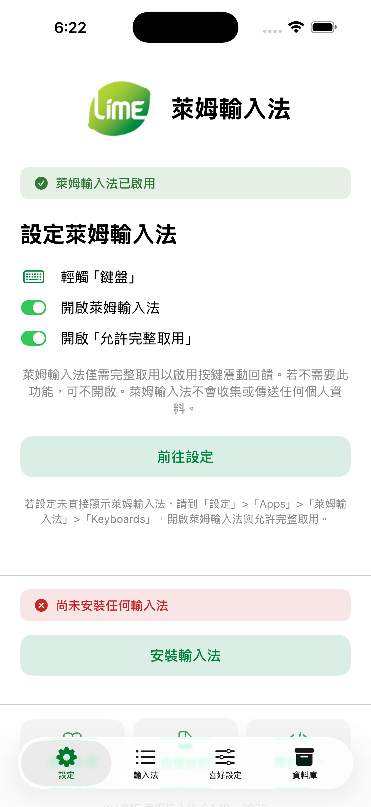
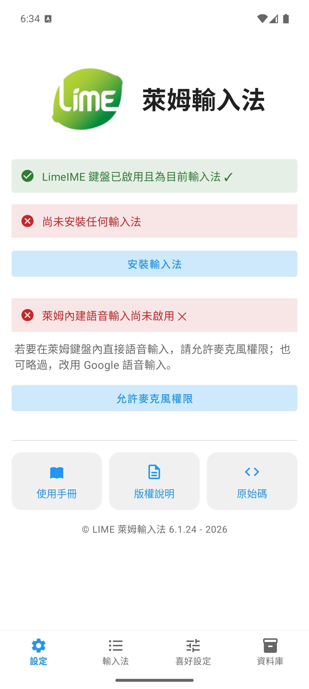

歡迎使用萊姆輸入法
①
01 · 開始使用
快速上手
在 iPhone、iPad 與 Android 啟用萊姆輸入法鍵盤，並下載第一套輸入法。
開始 →ㄅ
02 · 打字
鍵盤輸入
中文、英文、符號、長按、空白鍵移標與 Emoji 的實際打字指南。
開始 →輸
03 · 輸入法
管理輸入法
下載、匯入、啟用與編輯輸入法，分享單一輸入法與關聯字詞。
開始 →⚙
04 · 喜好設定
喜好設定
鍵盤主題與大小、輸入行為、簡繁轉換、字根反查與各平台注意事項。
開始 →⤓
05 · 資料庫
備份與還原
備份整個資料庫、還原舊版備份，以及還原預設碼表的完整流程。
開始 →＋
06 · 進階
進階自訂
自製輸入法、碼表格式、學習系統與自訂鍵盤佈局。
開始 →!
07 · 支援
疑難排解
啟用、碼表、資料庫與語音輸入常見問題的快速排查。
開始 →?
08 · 支援
常見問題
跨主題的快速解答，找不到答案時先看這裡。
開始 →私
09 · 法務
隱私說明
不收集個資的原則，以及 Android、iOS 權限的實際用途。
開始 →©
10 · 法務
版權說明
GPL-3.0 授權、輸入法碼表致謝與第三方開源元件說明。
開始 →先確認你的平台
萊姆輸入法在不同平台的啟用步驟略有差異，下載輸入法、備份與還原的方式則一致。第一次設定請依你的裝置選擇對應段落。
iPhone設定分頁

iOS「設定」分頁，綠色橫幅代表對應狀態已完成。
Android設定分頁

Android「設定」分頁，依目前狀態顯示啟用與切換按鈕。